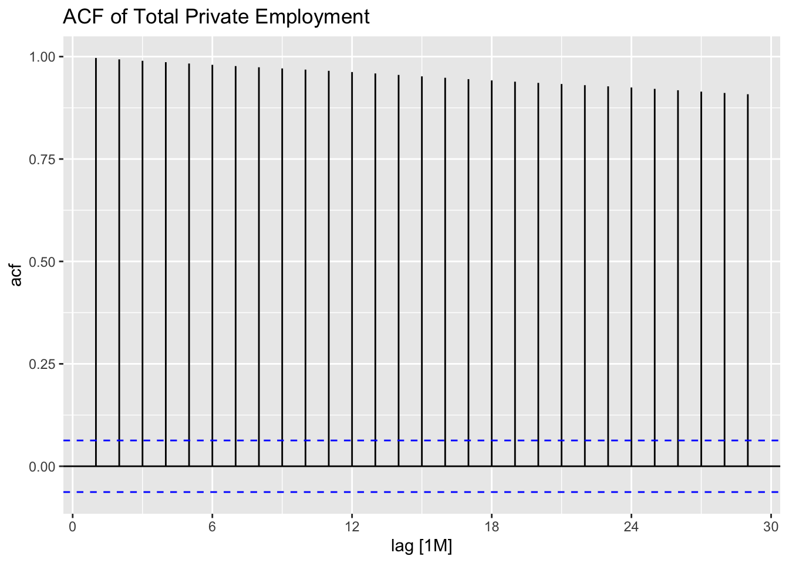
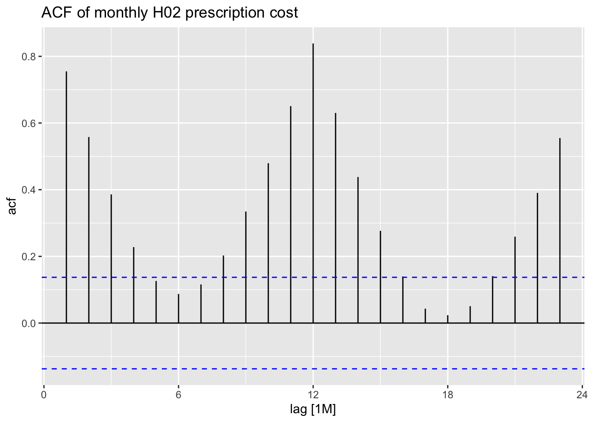
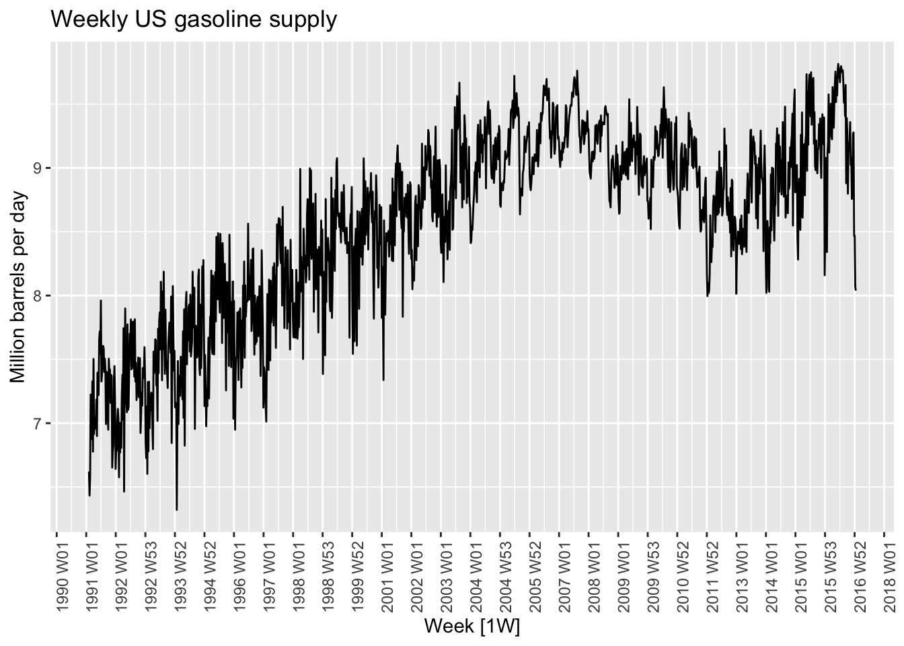
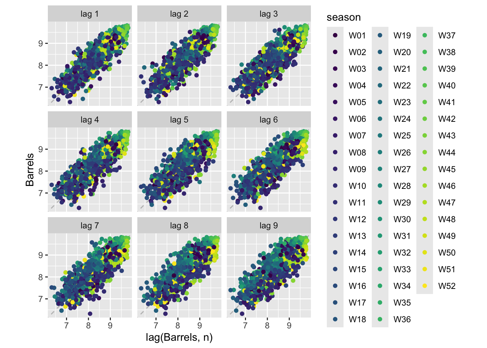
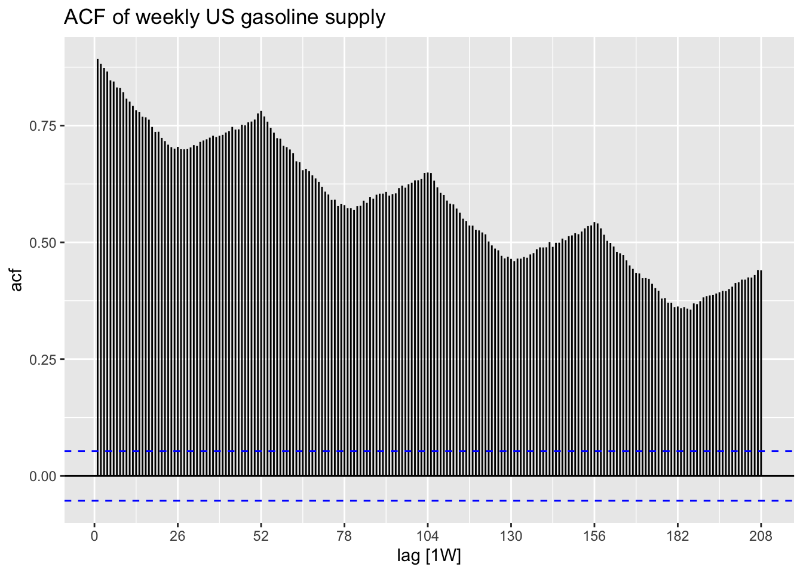

exercise 1 - matching 1- b - the autocorrelations are positive but gradually fade, showing persistence without strong seasonality, which we can see on the graph
2 - a - the ACF has a clear spike around lag 12, meaning yearly seasonality in monthly data
3 - d - the ACF stays very high and decreases slowly, which is what usually happens for strong upward trends, and the ACF crosses the blue line by far which show very strong significance (very strong trend in graph)
4 - c - the ACF alternates between positive and negative values, matching the cyclic rises and falls in the series.
total_private |>ACF(Employed) |>autoplot() +labs(title ="ACF of Total Private Employment" )

Total private employment shows a very strong long-term upward trend with some downturns during recessions like 2008, and the ACF decays slowly because nearby employment values are persistent over time, so even a few months later the data will be quite similar, but the earliest data being the best predictor.
PBS_H02_monthly |>ACF(total_cost) |>autoplot() +labs(title ="ACF of monthly H02 prescription cost")

The H02 prescription cost series shows yearly seasonality. We can see this in the repeated monthly pattern and the stronger ACF/lag relationship around lag 12.
us_gasoline |>autoplot(Barrels) +scale_x_yearweek(date_breaks ="1 year" ) +theme(axis.text.x =element_text(angle =90)) +labs(title ="Weekly US gasoline supply",y ="Million barrels per day" )

us_gasoline |>gg_lag(Barrels, geom ="point")

us_gasoline |>ACF(Barrels, lag_max =52*4) |>autoplot() +labs(title ="ACF of weekly US gasoline supply")

#data is weekly, one yearly seasonal cycle is about 52 lags, so using 52 * 4 shows about four years of seasonal autocorrelation
Time plot: Gasoline supply has repeated up-and-down movement within each year, so it suggests possible yearly seasonality Lag plots: The lag plots show positive relationships at nearby lags: points slope upward, meaning weeks close together tend to have similar gasoline supply. But this plot is too crowded to clearly identify yearly seasonality by itself. ACF plot: Correlation rises very clearly every 52 weeks (a year), whcih makes seasonality evident
04_D_TSGraphs_MoreExercises
Exercise 1
pollution <-# Read the fileread_csv("../../data/Beijing_Pollution_TSeries.csv") |>#Step 1: create the time_stampmutate(time_stamp =make_datetime(year, month, day, hour)) |>#Step 2: reorder columns and drop timestamp components (keep only the newly created timestamp)select(time_stamp, everything(), -c(No, year, month, day, hour)) |>#Step 3: convert to tsibbleas_tsibble(index = time_stamp)
Rows: 35064 Columns: 18
── Column specification ────────────────────────────────────────────────────────
Delimiter: ","
chr (2): wd, station
dbl (16): No, year, month, day, hour, PM2.5, PM10, SO2, NO2, CO, O3, TEMP, P...
ℹ Use `spec()` to retrieve the full column specification for this data.
ℹ Specify the column types or set `show_col_types = FALSE` to quiet this message.
fuel_quarterly <- fuel_prices |># Use group_by so that the subsequent index_by is applied# group-wise.group_by(fuel_type) |># Index by yearquarter index_by(yq =yearquarter(Date)) |># Summarisesummarise(# One mean per fuel_type per quarter, so the name must not say "petrol"mean_price_USD =mean(price_USD, na.rm =TRUE) ) |>ungroup()fuel_quarterly
With group_by(fuel_type) there is quarterly data both for petrol and diesel separately. Without it they are averaged together into one combined series.
First of all we can see that diesel and petrol prices are highly correlated and move almost perfectly together. Secondly, there has been a strong trend of price increase form 2004 until 2008 Q3, which was followed by a sharp drop (likely due to 2008 financial crisis).